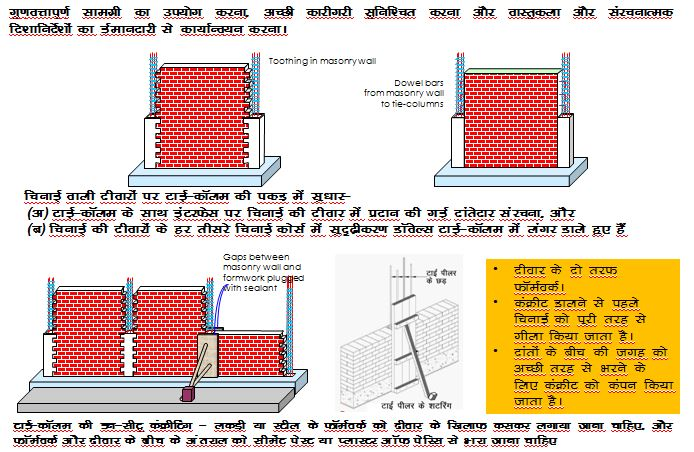
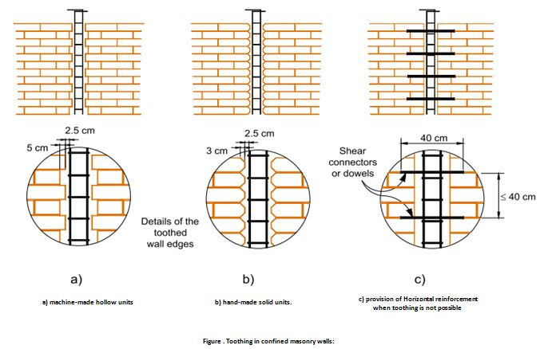
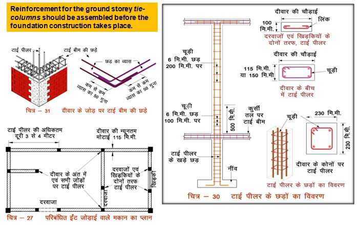
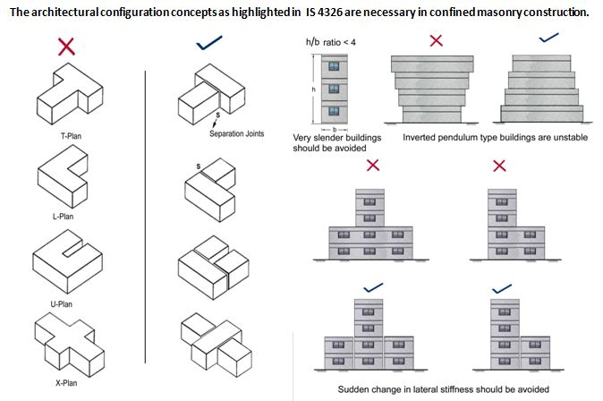
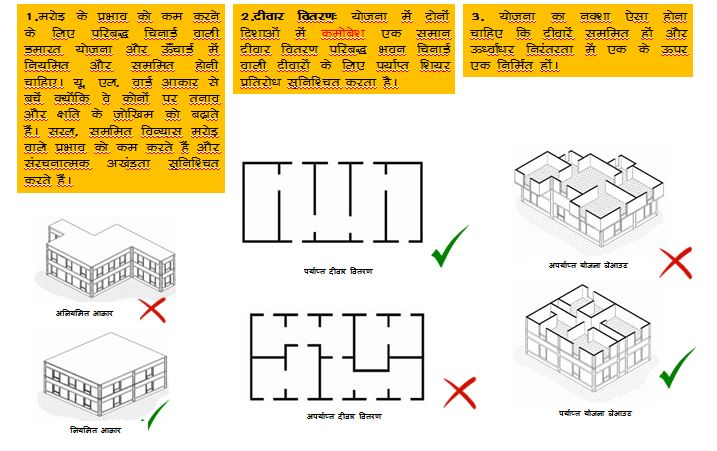

7.1. निर्माण
1. प्रत्येक कोने और दीवार के जोड़ों पर टाई कॉलम उपलब्ध कराए जाएंगे। यदि दीवार की लंबाई 4200उउ मीटर से अधिक है, तो दीवार की लंबाई को विभाजित करें और अतिरिक्त समान दूरी वाले कॉलम प्रदान करें।
2. योजना में कोणीय या गोलाकार दीवारों का उपयोग नहीं किया जाएगा। सभी दीवारें एक दूसरे के समानांतर या लंबवत होनी चाहिए।
3. चिनाई वाली नींव की दीवार के ऊपर एक सतत प्रबलित कंक्रीट प्लिंथ बीम का उपयोग करें।
4. चिनाई में फ्लेमिश बांड/इंग्लिष बांड को प्राथमिकता दी जानी चाहिए।
7.2. निर्माण संबंधी दिषनिर्देष
 7.3.Tie Columns Guidelines
7.4.Building Configuration
7.4.योजना
● कोई भी इमारत उसकी चौड़ाई की तुलना में बहुत लंबी नहीं होनी चाहिए।
● विभिन्न खंडों के बीच अंतराल प्रदान करके छोटे खंडों में एक बड़ी इमारत का निर्माण करना बेहतर है
● सममित रूप से डिजाइन की गई इमारत भूकंप के दौरान बेहतर प्रदर्शन करती है।
● एक इमारत क्षैतिज और ऊर्ध्वाधर दोनों दिशाओं में सममित होनी चाहिए।
● जैसा कि पहले बताया गया है, सभी चिनाई पैनलों को टाई कॉलम के आरसीसी में जाकर आरसीसी टाई कॉलम से जोड़़ा जाना चाहिए।
● दरवाजे और खिड़की की चौड़ाई छोटी होनी चाहिए।
● चिनाई में कोई भी दो दरवाजे या खिड़कियां कम से कम 600उउ की दूरी पर होनी चाहिए। दीवारों में दरवाजे और खिड़कियां आरसीसी के 75उउ मोटे बैंड द्वारा मजबूत किए गए हैं। ये बैंड आरसीसी सिल और लिंटेल बैंड से जुड़े हुए हैं।
वेल्डेड स्टील के दरवाजे और खिड़की के फ्रेम 40ग40ग5उउ आकार के स्टील सेक्शन से बने होते हैंए जिनमें चारों तरफ होल्डफास्ट होते हैं। इन्हें चिनाई कार्य के दौरान एम20 ग्रेड कंक्रीट का उपयोग करके दीवारों में लगाया जाता है। निचले और ऊपरी होल्डफ़ास्ट को प्लिंथए सिल और लिंटेल बैंड के आरसीसी में एम्बेड किया गया है। यह प्रक्रिया दीवारों में दरवाजे और खिड़की के कटआउट को मजबूत करती है।